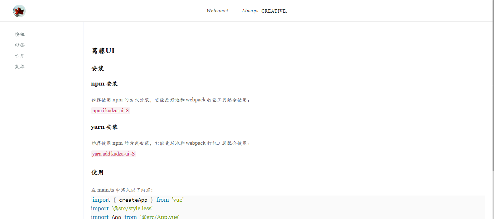
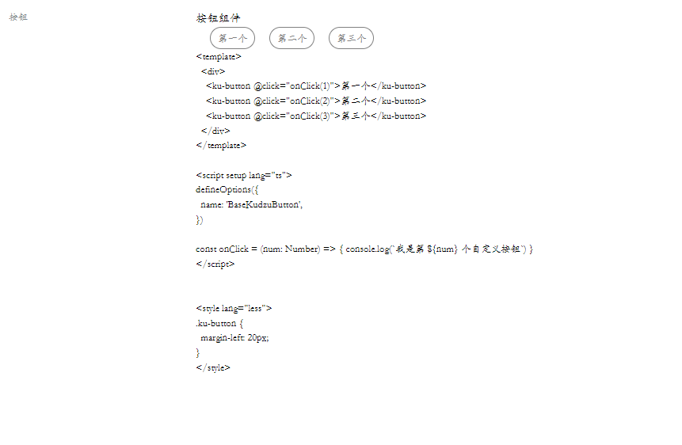

兼容性注意
手把手教你从零到开始打造一个属于自己的vue3UI组件库。技术栈：Vite + Vue3 + Typescript + Less。
一、使用 Vite 初始化项目 在空白目录执行下列命令：
在终端输入命令yarn create vite，运行后出现如下界面
输入项目名称进行，然后回车
按键盘上下键切换，回车确认，这里我们选择vue
选择TypeScript
安装依赖yarn create vite
跑起来看下yarn dev
效果如下图所示：
二、项目改造 1. 添加jsx支持 安装插件：yarn add @vitejs/plugin-vue-jsx
配置插件：
1 2 3 4 5 6 7 8 9 10 import vueJsx from '@vitejs/plugin-vue-jsx' export default { plugins: [ vueJsx({ }) ] }
2. 添加less支持 安装插件：npm add -D less
目录及文件改造的tsx和less改造1 2 3 4 5 6 7 8 9 10 11 12 13 14 15 16 17 18 19 20 21 22 23 24 │ .gitignore │ index.html │ package.json │ README.md │ tsconfig.json │ tsconfig.node.json │ vite.config.ts │ yarn-error.log │ yarn.lock │ ├─public │ vite.svg │ └─src │ App.vue │ main.ts │ style.css │ vite-env.d.ts │ ├─assets │ vue.svg │ └─components HelloWorld.vue
将App.vue文件改为App.tsx
1 2 3 4 5 6 7 8 9 10 11 12 13 14 15 16 17 18 19 20 21 22 23 import { defineComponent } from 'vue' import vueLogo from './assets/vue.svg' import styles from './App.module.less' export default defineComponent({ name: 'App' , setup ( return () => ( <div id="App" class <div> <a href="https://vitejs.dev" target="_blank" > <img src="/vite.svg" class "Vite logo" /> </a> <a href="https://vuejs.org/" target="_blank" > <img src={vueLogo} class `${styles.logo} ${styles.vue} ` } alt="Vue logo" /> </a> </div> Kudzu UI </div> ) } })
新增文件App.modules.less
1 2 3 4 5 6 7 8 9 10 11 12 13 14 15 16 17 18 19 .App { font-size : 14px ; .logo { height : 6em ; padding : 1.5em ; will-change: filter; & :hover { filter : drop-shadow(0 0 2em #646cff aa); } } .vue { :hover { filter : drop-shadow(0 0 2em #42b883 aa); } } }
将style.css改为style.less
1 2 3 4 5 6 7 8 9 10 11 12 13 14 15 16 17 18 19 20 21 22 23 24 25 26 27 28 29 30 31 32 33 34 35 36 37 38 39 40 41 42 43 44 45 46 47 48 49 50 51 52 53 54 55 56 57 58 59 60 61 62 63 64 65 66 67 68 69 70 71 72 73 74 75 76 77 78 79 80 81 82 83 84 85 86 87 88 89 90 :root { font-family : Inter, Avenir, Helvetica, Arial, sans-serif; font-size : 16px ; line-height : 24px ; font-weight : 400 ; color-scheme : light dark; color : rgba(255 , 255 , 255 , 0.87 ); background-color : #242424 ; font-synthesis : none; text-rendering : optimizeLegibility; -webkit-font-smoothing : antialiased; -moz-osx-font-smoothing : grayscale; -webkit-text-size-adjust: 100%; } a { font-weight : 500 ; color : #646cff ; text-decoration : inherit; & :hover { color : #535bf2 ; } } body { margin : 0 ; display : flex; place-items: center; min-width : 320px ; min-height : 100vh ; h1 { font-size : 3.2em ; line-height : 1.1 ; } button { border-radius : 8px ; border : 1px solid transparent; padding : 0.6em 1.2em ; font-size : 1em ; font-weight : 500 ; font-family : inherit; background-color : #1a1a1a ; cursor : pointer; transition : border-color 0.25s ; :hover { border-color : #646cff ; } & :focus , & :focus -visible { outline : 4px auto -webkit-focus-ring-color; } } .card { padding : 2em ; } #app { max-width : 1280px ; margin : 0 auto; padding : 2rem ; text-align : center; } } @media (prefers-color-scheme : light) { :root { color : #213547 ; background-color : #ffffff ; } body { a { & :hover { color : #747bff ; } } button { background-color : #f9f9f9 ; } } }
改造后目录结构
1 2 3 4 5 6 7 8 9 10 11 12 13 14 15 16 17 18 19 20 21 22 23 24 │ .gitignore │ index.html │ package.json │ README.md │ tsconfig.json │ tsconfig.node.json │ vite.config.ts │ yarn-error.log │ yarn.lock │ ├─public │ vite.svg │ └─src │ App.tsx │ App.modeles.less │ main.ts │ style.less │ vite-env.d.ts │ ├─assets │ vue.svg │ └─components
4. 自适应布局 添加插件：postcss-px-to-viewportyarn add -D postcss-px-to-viewport
1 2 3 4 5 6 7 8 9 10 11 12 13 14 15 16 17 18 19 20 21 22 23 import { defineConfig } from 'vite' import vue from '@vitejs/plugin-vue' import vueJsx from '@vitejs/plugin-vue-jsx' import pxtoviewport from 'postcss-px-to-viewport' const pxtoviewportConfig = pxtoviewport({ viewportWidth: 1366 , }) export default defineConfig({ plugins: [ vue(), vueJsx({ }), ], css: { postcss: { plugins: [pxtoviewportConfig] } } })
三、 组件库开发 在根目录下新建目录：packages，后续开发的组件都放在该目录下
1. 工具函数准备 在packages目录下新建utils目录
1 2 3 4 5 6 7 packages │ index.ts // 组件库导出文件 │ list.json // 组件列表 └─utils │ index.ts // 模块导出文件 │ install.ts // vue的install封装函数 │ util.ts // 其他工具函数
下面分别看看这些文件都是些什么内容。
1 2 3 4 export * from './install' export * from './util'
packages/utils/install.ts
1 2 3 4 5 6 7 8 9 10 import { App, Plugin } from 'vue' ;export const withInstall = (component: any ): Plugin => return { install (app: App ) app.component(component.name, component); }, }; }
packages/utils/util.ts
1 2 3 export const getImageUrl = (src: string ): string => return new URL(src, import .meta.url).href }
在packages目录下新建Button目录
1 2 3 4 5 6 7 8 9 10 11 12 13 14 15 16 packages │ index.ts // 组件库导出文件 │ list.json // 组件列表 └─Button │ index.ts // 模块导出文件 │ ├─demo │ base.vue // 实例 │ ├─docs │ README.md // 组件文档 │ └─src index.tsx // 组件本体 index.less // 组件样式
下面分别看看这些文件都是些什么内容。
1 2 3 4 5 6 7 8 9 10 11 12 13 14 15 16 17 18 19 20 21 22 23 24 25 26 27 28 29 30 31 import { defineComponent } from 'vue' import './index.less' export default defineComponent({ name: 'KuButton' , props: { }, emits: { click (payload: { event: Event } ) return payload.event } }, setup (props, { emit, slots } ) const handleClick = (event: Event ) => { emit('click' , { event }) }; return () => ( <button class "ku-button" onClick={handleClick} > { slots.default ? slots.default() : null } </button> ) } })
packages/Button/src/index.less
1 2 3 4 5 6 7 8 9 10 11 12 13 14 15 16 17 18 .ku-button { color : gray; padding-top : 4px ; padding-bottom : 4px ; padding-left : 10px ; padding-right : 10px ; border : 1px solid gray; border-radius : 2000px ; background-color : transparent; transition : all ease .3s ; user-select: none; cursor : pointer; & :hover { background-color : gray; color : #fff ; } }
packages/Button/index.ts
1 2 3 4 5 6 7 import { createApp } from 'vue' import './style.less' import App from './App' import KudzuUI from '../packages' createApp(App).use(KudzuUI).mount('#app' )
也允许按需引入：
1 2 3 import { Button } from 'kudzu-ui' Vue.component('ku-button', Button)
因此需要为每一个组件定义一个 VuePlugin 的引用方式。package/Button/index.ts 的内容如下：
1 2 3 4 5 6 7 import { withInstall } from '@kudzu/utils' import Button from './src/index' export const kuButton = withInstall(Button)export { Button }
补充：配置别名@kudzu
1 2 3 4 5 6 7 8 9 10 11 12 13 14 15 16 17 18 19 20 21 { "compilerOptions" : { "baseUrl" : "." , "paths" : { "@kudzu/*" : ["packages/*" ], "@examples/*" : ["examples/*" ], }, } } import path from 'path' export default defineConfig({ resolve: { alias: { '@kudzu' : path.resolve(__dirname, './packages' ) } } })
packages/index.ts
1 2 3 4 5 6 7 8 9 10 11 12 13 14 15 16 import { App, Plugin } from 'vue' import { KuButtonPlugin } from './components/Button' const kuPlugin: Plugin = { install (app: App ) KuButtonPlugin.install?.(app) }, }; export default kuPlugin;export * from './components/Button'
/packages/list.json
1 2 3 4 5 6 7 8 [ { "compName" : "Button" , "compCnName" : "按钮" , "compDesc" : "这是一个按钮" , "compClassName" : "ku-button" } ]
完成了上述组件库目录的初始化以后，此时我们的 Kudzu-UI 是已经可以被业务侧直接使用了。
1 2 3 4 5 6 7 import { createApp } from 'vue' import './style.less' import App from './App' import KudzuUI from '../packages' createApp(App).use(KudzuUI).mount('#app' )
改写 src/App.tsx，使用 试一下：
1 2 3 4 5 6 7 8 9 10 11 12 13 14 15 import { defineComponent } from 'vue' import vueLogo from './assets/vue.svg' import styles from './App.module.less' export default defineComponent({ name: 'App' , setup ( return () => ( <div id="App" class <ku-button onClick={(a: Event ) => console .log(a)}>Kudzu UI Button</ku-button> </div> ) } })
运行 yarn dev 开启 Vite 的服务器以后，就可以直接在浏览器上看到效果了：
3. 实时可交互式文档 一个组件库肯定不止有 Button 一种组件，每个组件都应该有它独立的文档。这个文档不仅有对组件各项功能的描述，更应该具有组件预览、组件代码查看等功能，我们可以把这种文档称之为“可交互式文档”。同时为了良好的组件开发体验，我们希望这个文档是实时的，这边修改代码，那边就可以在文档里实时地看到最新的效果。接下来我们就来实现这么一个功能。
将src目录重命名为examples目录
1 2 3 4 5 6 7 8 9 10 11 12 13 14 15 16 17 18 19 20 21 22 23 24 25 26 27 28 29 30 31 32 33 34 35 36 37 38 39 40 41 42 43 44 45 46 47 KUDZU-UI │ .gitignore │ index.html │ package-lock.json │ package.json │ README.md │ tsconfig.json │ tsconfig.node.json │ vite.config.ts │ yarn-error.log │ yarn.lock ├─examples │ │ App.module.less │ │ App.tsx │ │ main.ts │ │ style.less │ │ vite-env.d.ts │ │ │ ├─assets │ │ vue.svg │ │ │ └─components ├─packages │ │ index.ts │ │ list.json │ │ tree.md │ │ │ ├─Button │ │ │ index.ts │ │ │ │ │ ├─demo │ │ │ base.tsx │ │ │ │ │ ├─docs │ │ │ README.md │ │ │ │ │ └─src │ │ index.module.less │ │ index.tsx │ │ │ └─utils │ index.ts │ install.ts │ typescript.ts │ └─public vite.svg
修改对应配置文件
1 2 3 4 5 6 7 8 9 10 11 12 13 14 15 16 17 18 19 20 21 22 { "compilerOptions" : { "target" : "ESNext" , "useDefineForClassFields" : true , "module" : "ESNext" , "moduleResolution" : "Node" , "strict" : true , "jsx" : "preserve" , "resolveJsonModule" : true , "isolatedModules" : true , "esModuleInterop" : true , "lib" : ["ESNext" , "DOM" ], "skipLibCheck" : true , "noEmit" : true }, "include" : ["examples/**/*.ts" , "examples/**/*.d.ts" , "examples/**/*.tsx" , "examples/**/*.vue" ], "paths" : { "@kudzu/*" : ["packages/*" ] }, "references" : [{ "path" : "./tsconfig.node.json" }] }
修改引用
1 2 3 4 5 6 7 8 9 10 11 12 13 <!DOCTYPE html > <html lang ="en" > <head > <meta charset ="UTF-8" /> <meta name ="viewport" content ="width=device-width, initial-scale=1.0" /> <title > Kudzu UI</title > </head > <body > <div id ="app" > </div > <script type ="module" src ="/examples/main.ts" > </script > </body > </html >
引入vue-routeryarn add vue-router@latest
@latest表示最新版本
1 2 3 4 5 6 7 8 9 10 11 12 13 14 15 16 17 18 19 20 21 22 import { createRouter, createWebHistory, RouterOptions } from 'vue-router' const routes = [{ title: '按钮' , name: 'Button' , path: '/components/Button' , component: () => import (`@kudzu/Button/docs/README.md` ), }] const routerConfig = { history: createWebHistory(), routes, scrollBehavior (to: any , from : any ) if (to.path !== from .path) { return { top : 0 } } }, }; const router = createRouter(routerConfig as RouterOptions)export default router
修改ts配置文件
1 2 3 4 5 6 7 8 9 10 11 12 13 14 15 16 17 18 19 20 21 22 23 24 25 { "compilerOptions" : { "target" : "ESNext" , "useDefineForClassFields" : true , "module" : "ESNext" , "moduleResolution" : "Node" , "strict" : true , "jsx" : "preserve" , "resolveJsonModule" : true , "isolatedModules" : true , "esModuleInterop" : true , "lib" : ["ESNext" , "DOM" ], "skipLibCheck" : true , "noEmit" : true }, "include" : [ "examples/**/*.ts" , "examples/**/*.d.ts" , "examples/**/*.tsx" , "examples/**/*.vue" , "packages/**/*.ts" , "packages/**/*.d.ts" , "packages/**/*.tsx" , "packages/**/*.vue" , ], "paths" : { "@kudzu/*" : ["packages/*" ] }, "references" : [{ "path" : "./tsconfig.node.json" }] }
ps: 页面引用报错处理，添加对应声明即可
1 2 3 4 5 6 7 8 9 10 11 12 13 14 15 16 17 18 19 20 declare module '*.vue' { import type { DefineComponent } from 'vue' const component: DefineComponent<{}, {}, any > export default component } declare module "*.less" { const classes: { readonly [key: string ]: string }; export default classes; } declare module '*.md' { import type { ComponentOptions } from 'vue' const Component: ComponentOptions export default Component } declare module "*.json"
解析markdownyarn add vite-plugin-md -D
1 2 3 4 5 6 7 8 9 10 import Markdown from 'vite-plugin-md' export default defineConfig({ plugins: [ vue({ include : [/\.vue$/ , /\.md$/ ] }), Markdown(), ], })
此时可能会遇到一个报错：Cannot find package '@rollup/pluginutils'yarn add @rollup/pluginutils -D
页面结构和样式调整
1 2 3 4 5 6 7 8 9 10 11 12 13 14 15 16 17 18 19 20 21 22 23 24 25 26 27 28 29 30 31 32 33 34 35 36 37 38 39 40 import { defineComponent, reactive } from 'vue' import styles from './App.module.less' import ComponentList from '@kudzu/list.json' interface ComponentsItem { compName: String ; compZhName: String ; } interface LinkItem { path: String ; name: String ; } export default defineComponent({ name: 'App' , setup ( const data = reactive({ links: ComponentList.map((item: ComponentsItem ) => ({ path: `/components/${item.compName} ` , name: item.compZhName })) }) return () => ( <div id="App" class <aside class { data.links.map((v: LinkItem ) => { return <router-link key ={v.path} to ={v.path} > { v.name }</router-link > }) } </aside> <main class <router-view /> </main> </div> ) } })
样式重写
1 2 3 4 5 6 7 8 9 10 11 12 13 14 15 16 17 18 19 20 21 22 23 24 25 26 27 28 29 30 31 32 33 34 35 36 37 38 39 40 41 42 43 44 45 46 47 48 49 50 51 52 53 54 55 56 57 58 59 60 61 62 63 64 65 66 67 68 69 70 71 72 73 74 75 76 77 78 79 80 81 82 83 84 85 86 87 88 89 90 91 92 93 94 95 96 97 98 99 100 101 102 103 104 105 106 107 108 109 110 111 112 113 114 115 116 117 118 119 120 121 122 123 124 125 126 127 128 129 130 131 132 133 134 135 136 137 138 139 140 141 142 143 144 145 146 147 148 149 150 151 152 153 154 155 156 157 158 159 160 161 162 163 164 165 166 167 168 169 170 171 172 * { font : normal 14px /1.5 'Lucida Console' , "monospace" , "STKaiti" ; } html ,body ,div ,span ,applet ,object ,iframe ,h1 ,h2 ,h3 ,h4 ,h5 ,h6 ,p ,blockquote ,pre ,a ,abbr ,acronym ,address ,big ,cite ,code ,del ,dfn ,em ,img ,ins ,kbd ,q ,s ,samp ,small ,strike ,strong ,sub ,sup ,tt ,var ,b ,u ,i ,center ,dl ,dt ,dd ,ol ,ul ,li ,fieldset ,form ,label ,legend ,table ,caption ,tbody ,tfoot ,thead ,tr ,th ,td ,article ,aside ,canvas ,details ,embed ,figure ,figcaption ,footer ,header ,menu ,nav ,output ,ruby ,section ,summary ,time ,mark ,audio ,video ,input { margin : 0 ; padding : 0 ; border : 0 ; font-size : 100% ; font-weight : normal; vertical-align : baseline; } article ,aside ,details ,figcaption ,figure ,footer ,header ,menu ,nav ,section { display : block; } body { line-height : 1 ; } blockquote ,q { quotes : none; } blockquote :before ,blockquote :after ,q :before ,q :after { content : none; } table { border-collapse : collapse; border-spacing : 0 ; } a { color : #7e8c8d ; text-decoration : none; } li { list-style : none; } ::-webkit-scrollbar { width : 5px ; height : 5px ; } ::-webkit-scrollbar-track-piece { background-color : rgba(0 , 0 , 0 , 0.2 ); -webkit-border-radius : 6px ; } ::-webkit-scrollbar-thumb :vertical { height : 5px ; background-color : rgba(125 , 125 , 125 , 0.7 ); -webkit-border-radius : 6px ; } ::-webkit-scrollbar-thumb :horizontal { width : 5px ; background-color : rgba(125 , 125 , 125 , 0.7 ); -webkit-border-radius : 6px ; } html ,body { width : 100% ; } body { -webkit-text-size-adjust: none; -webkit-tap-highlight-color : rgba(0 , 0 , 0 , 0 );}
最后我们往 /packages/Button/docs/README.md 里面随便写点东西：
1 2 3 # 按钮组件 <ku-button > </ku-button >
完成以后就能在浏览器上看到效果了：
5 添加文档首页
1 2 3 4 5 6 7 8 9 10 11 12 13 14 15 16 17 18 19 20 21 22 23 24 25 26 27 28 # 葛藤UI ## 安装 ### npm 安装 推荐使用 npm 的方式安装，它能更好地和 webpack 打包工具配合使用。 \`npm i kudzu-ui -S\` ### yarn 安装 \`yarn add kudzu-ui -S\` ## 使用 在 main.ts 中写入以下内容： \```javascript import { createApp } from 'vue' import '@src/style.less' import App from '@src/App.vue' import router from '@src/router' import KudzuUI from 'kudzu-ui' import 'kudzu-ui/lib/style.css' createApp(App).use(router).use(KudzuUI).mount('#app') \```
examples/router.ts
1 2 3 4 5 6 7 8 9 10 11 12 13 14 15 16 17 18 19 20 21 22 23 24 25 26 27 28 29 30 31 32 33 34 35 36 37 38 39 40 41 42 43 44 import { createRouter, createWebHistory, RouterOptions } from 'vue-router' import Index from './views/Index' import GetStart from './docs/get-start.md' import Button from '../packages/components/Button/docs/README.md' const routes = [ { title: '首页' , name: 'Index' , path: '/' , component: Index, redirect: '/get-start' }, { title: '起步' , name: 'GetStart' , path: '/get-start' , component: GetStart, }, { title: '按钮' , name: 'Button' , path: '/components/button' , component: Button, } ] const routerConfig = { history: createWebHistory(import .meta.env.BASE_URL), routes, scrollBehavior (to: any , from : any ) if (to.path !== from .path) { return { top : 0 } } }, } const router = createRouter(routerConfig as RouterOptions) export default router

由于我们全局引入了Kudzu UI，所以里面所注册的自定义组件都可以直接在 Markdown 文件中像普通 HTML 标签一样被写入并被正确渲染。但是这里也有另一个问题，就是这些组件都是静态的无事件的，无法执行 JS 逻辑。比如当我想要实现点击按钮触发 click 事件然后弹一个告警弹窗出来，是无法直接这么写的：
1 2 3 # 按钮组件 <ku-button @click ="() => </ku-button>
那怎么办呢？还记得刚刚引入的解析 Markdown 的插件 vite-plugin-md 吗？仔细看它的文档，它是支持在 Markdown 里面写 setup 函数的！因此我们可以把需要执行 JS 逻辑的代码封装成一个组件，然后在 Markdown 里通过 setup 来引入。
这边不像组件封装，需要较高的灵活度，故采用vue格式，便于将组件所有资源（dom结构，css样式和对应js事件）放在同一个文件中进行维护
1 2 3 4 5 6 7 8 9 10 11 12 13 14 15 16 17 18 19 20 21 22 23 24 <template> <div class="base-ku-button"> <ku-button @click="onClick(1)">第一个</ku-button> <ku-button @click="onClick(2)">第二个</ku-button> <ku-button @click="onClick(3)">第三个</ku-button> </div> </template> <script setup lang="ts"> defineOptions({ name: 'BaseButton', }) const onClick = (num: Number) => { console.log(`我是第 ${num} 个自定义按钮`) } </script> <style lang="less" scoped> .base-ku-button { display: grid; grid-template-columns: 100px 100px 100px; grid-gap: 20px; } </style>
为了给组件命名，我们使用了宏defineOptions，而defineOptions的使用需要插件的支持，这边安装整个插件，后续若需要使用其他功能，便于扩展yarn add unplugin-vue-macros -D
1 2 3 4 5 6 7 8 9 10 11 12 13 14 15 16 17 18 19 20 21 22 23 24 25 26 27 28 29 30 31 32 33 34 35 36 37 import { defineConfig } from 'vite' import vue from '@vitejs/plugin-vue' import vueJsx from '@vitejs/plugin-vue-jsx' import pxtoviewport from 'postcss-px-to-viewport' import path from 'path' import Markdown from 'vite-plugin-md' import VueMacros from 'unplugin-vue-macros/vite' const pxtoviewportConfig = pxtoviewport({ viewportWidth: 1366 , }) export default defineConfig({ plugins: [ VueMacros({ plugins: { vue: vue({ include : [/\.vue$/ , /\.md$/ ] }), vueJsx: vueJsx({ }), }, }), Markdown(), ], css: { postcss: { plugins: [pxtoviewportConfig] } }, resolve: { alias: { '@kudzu' : path.resolve(__dirname, './packages' ) } } })
tsconfig.json
1 2 3 4 5 6 { "compilerOptions" : { "types" : ["unplugin-vue-macros/macros-global" ] } }
然后在 Markdown 里把它引进来：
1 2 3 4 5 6 7 <script setup lang ="ts" > import BaseKudzuButton from '../demo/base.vue' </script > # 按钮组件 <BaseKudzuButton />
最后就能实现点击响应了。
四、代码预览功能
只要把组件放进一个 <Preview /> 标签内就能直接展示组件的代码，同时还具有代码高亮的功能，这才是可交互式文档真正具备的样子！接下来我们就来研究一下应该如何实现这个功能。<Preview /> 组件中获取所需要展示的文件源码。
1. 新建一个 Preview.jsx 文件 首先来新建一个 Preview.jsx 文件，其核心内容是通过 Props 拿到源码的路径，然后通过动态 import 的方式把源码拿到。
1 2 3 4 5 6 7 8 9 10 11 12 13 14 15 16 17 18 19 20 21 22 23 24 25 26 27 28 29 30 31 32 33 34 35 import { defineComponent, onMounted, reactive } from "vue" export default defineComponent({ props: { compName: { type : String , default : '' , require : true , }, demoName: { type : String , default : '' , require : true , }, }, setup (props ) const data = reactive({ sourceCode: '' , }) onMounted(async () => { data.sourceCode = ( await import (`../../packages/${props.compName} /demo/${props.demoName} .vue?raw` ) ).default }) return () => ( <pre>{ data.sourceCode }</pre> ) } })
早期版本可能需要 @vite-ignore 的注释
1 2 3 4 5 6 7 8 9 10 const isDev = import .meta.env.MODE === 'development' ;if (isDev) { this .sourceCode = ( await import ( `../../packages/${this .compName} /docs/${this .demoName} .vue?raw` ) ).default; } else { this .sourceCode = await fetch(`/packages/${this .compName} /docs/${this .demoName} .vue` ).then((res ) => res.text()); }
假设构建后的输出目录为 /docs，记得在构建后也要把 /packages 目录复制过去，否则在 build 模式下运行会出现 404 的情况。
可能又有同学会问，为什么要这么麻烦，直接在 dev 模式下也走 fetch 请求的方式不行么？答案是不行，因为在 Vite 的 dev 模式下，它本来就是通过 http 请求去拉取文件资源并处理完了才给到了业务的那一层。因此在 dev 模式下通过 fetch 拿到的 Vue 文件源码是已经被 Vite 给处理过的。
1 2 3 4 5 6 7 8 9 <script setup lang ="ts" > import Preview from '@examples/components/Preview' import BaseKudzuButton from '../demo/base.vue' </script > # 按钮组件 <BaseKudzuButton /> <Preview comp-name ='Button' demo-name ='base' />

2 高亮代码yarn add prismjs -D<Preview /> 组件中引入：
1 2 3 4 5 6 7 8 9 10 11 12 13 import { nextTick } from "vue" import PrismJS from 'prismjs' import '@examples/assets/prism.css' setup (props ) onMounted(async () => { await nextTick() PrismJS.highlightAll() }) } }
此处ts会报错：添加对应声明即可
1 declare module "prismjs"
由于 PrismJS 没有支持 Vue 文件的声明，因此 Vue 的源码高亮是通过将其设置为 HTML 类型来实现的。在 <Preview /> 组件的模板中我们直接指定源码的类型为 HTML：
1 <pre class="language-html"><code class="language-html">{data.sourceCode}</code></pre>
这样调整了以后，PrismJS 就会自动高亮源码了。
3. 优化使用方式以及样式 更进一步，在Preview中添加插槽和相应样式
1 2 3 4 5 6 7 8 9 10 11 12 13 14 15 16 17 18 19 20 21 22 23 24 25 26 27 28 29 30 31 32 33 34 35 36 37 38 39 40 41 42 43 44 45 46 47 48 49 50 51 52 53 54 55 56 57 58 59 60 61 62 63 import { defineComponent, onMounted, reactive, nextTick, ref } from "vue" import PrismJS from 'prismjs' import '@examples/assets/prism.css' import style from '@examples/components/Preview.module.less' export default defineComponent({ props: { compName: { type : String , default : '' , require : true , }, demoName: { type : String , default : '' , require : true , }, }, setup (props, { slots } ) const sourceCode = ref<any >(null ) const data = reactive({ sourceCode: '' , height: '0' }) onMounted(async () => { data.sourceCode = ( await import (`../../packages/${props.compName} /demo/${props.demoName} .vue?raw` ) ).default await nextTick() PrismJS.highlightAll() }) const changeSourceCodeStatus = () => { console .log() data.height === '0' ? data.height = getComputedStyle(sourceCode.value).height : data.height = '0' nextTick(() => { PrismJS.highlightAll() }) } return () => ( <div class <div class null }</div> <pre style={{ height : data.height, padding : data.height === '0' ? '0' : '20px' }} class "language-html" > <code ref={sourceCode} class "language-html" >{data.sourceCode}</code> </pre> <div class { data.height === 'hide' ? <span > 显示代码</span > <span > 隐藏代码</span > </div> </div> ) } })
examples/components/Preview.module.less
1 2 3 4 5 6 7 8 9 10 11 12 13 14 15 16 17 18 19 20 21 22 23 24 25 26 27 28 29 30 31 32 33 34 35 36 37 38 39 40 41 42 43 44 45 .preview { margin-bottom : 24px ; border : 1px solid #ebebeb ; border-radius : 3px ; transition : .2s ; & :hover { box-shadow : 0 0 8px 0 rgb(232 237 250 / 60% ), 0 2px 4px 0 rgb(232 237 250 / 50% ); } .display { padding : 24px ; } .control { border-top : 1px solid #eaeefb ; height : 44px ; line-height : 44px ; box-sizing : border-box; background-color : #fff ; border-bottom-left-radius : 4px ; border-bottom-right-radius : 4px ; text-align : center; margin-top : -1px ; color : #d3dce6 ; cursor : pointer; position : relative; user-select: none; & :hover { color : #409eff ; background-color : #f9fafc ; } } } :root { pre [class*=language-] { padding : 0 ; margin : 0 ; overflow : auto; background : #fafafa ; transition : .2s ; } }
修改调用方式
1 2 3 4 5 6 7 8 9 <script setup lang ="ts" > import Preview from '@examples/components/Preview' import BaseKudzuButton from '../demo/base.vue' </script > # 按钮组件 <Preview comp-name ='Button' demo-name ='base' > <BaseKudzuButton /> </Preview >
调整后效果如下：
五、命令式新建组件 到目前为止，我们的整个“实时可交互式文档”已经搭建完了，是不是意味着可以交付给其他同学进行真正的组件开发了呢？假设你是另一个开发同学，我跟你说：“你只要在这里，这里和这里新建这些文件，然后在这里和这里修改一下配置就可以新建一个组件了！”你会不会很想打人？作为组件开发者的你，并不想关心我的配置是怎样的，框架是怎么跑起来的，只希望能够在最短时间内就能够初始化一个新的组件然后着手开发。为了满足这个想法，我们有必要把之前处理的步骤变得更加自动化一些，学习成本更低一些。
整体思路是：在终端回答了三个问题后，自动就生成了一个新的组件 Foo。与此同时，无论是新建文件还是修改配置都是一键完成，完全不需要人工干预，接下来的工作只需要围绕 Foo 这一个新组件开展即可。我们可以把这种一键生成组件的方式成为“命令式新建组件”。
node环境下使用import/export
回到根目录下，新建 /script/generater 目录，然后创建一个 infoCollector.mjs 文件：
1 2 3 4 5 6 7 8 9 10 11 12 13 14 15 16 17 18 19 20 21 22 23 24 25 26 27 28 29 30 31 32 33 34 35 36 37 38 39 40 41 42 43 44 45 46 47 48 49 50 51 52 53 54 55 56 57 58 59 60 61 62 63 64 65 66 import inquirer from 'inquirer' import fs from 'fs-extra' import path, { resolve } from 'path' import { fileURLToPath } from 'url' const filename = fileURLToPath(import .meta.url)const __dirname = path.dirname(filename)const listFilePath = '../../packages/list.json' const RegxMap = { IS_COMP_NAME: /^[A-Z]/ , IS_COMP_CN_NAME: /^[\u4e00-\u9fa5]*$/ } const kebabCase = string => .replace(/([a-z])([A-Z])/g , "$1-$2" ) .replace(/[\s_]+/g , '-' ) .toLowerCase(); export default async () => { const meta = await inquirer .prompt([ { type: 'input' , message: '请输入你要新建的组件名（纯英文，大写开头）：' , name: 'compName' , validate (answer ) const done = this .async() const validateRes = RegxMap.IS_COMP_NAME.test(answer) if (!validateRes) { done('请按要求输入正确的组件名！' ) return } const listData = fs.readJSONSync(resolve(__dirname, listFilePath)) if (listData.find(item => done('已存在同名组件，请确认后更换名字再重试。' ) return } done(null , true ) } }, { type: 'input' , message: '请输入你要新建的组件名（中文）：' , name: 'compCnName' , validate (answer ) const done = this .async() const validateRes = RegxMap.IS_COMP_CN_NAME.test(answer) if (!validateRes) { done('请按要求输入正确的组件名！' ) return } done(null , true ) } }, { type: 'input' , message: '请输入组件的功能描述：' , name: 'compDesc' , default : '默认：这是一个新组件' } ]) const { compName } = meta meta.compClassName = kebabCase(compName) return meta }
通过 node 运行该文件时，会在终端内依次提出三个组件信息相关的问题，并把答案 compName（组件英文名），compCnName （组件中文名）和 compDesc（组件描述）保存在 meta 对象中并导出。
1 2 3 4 5 6 7 8 9 Foo ├── demo │ └── base.vue ├── docs │ ├── README.md ├── index.ts └── src ├── index.tsx └── index.less
需要新建 packages/components/src/index.ts.tpl，packages/components/src/index.tsx.tpl，packages/components/src/index.less.tpl，packages/components/docs/README.md.tpl 和 packages/components/demo/base.vue.tpl，examples/router.ts.tpl，packages/index.ts.tpl。同时由于新组件需要一个新的路由，因此router.ts 也是需要一个对应的模板。由于篇幅关系就不全展示了，只挑最核心的 index.ts.tpl 来看看：
1 2 3 4 5 6 import { withInstall } from '@kudzu/utils' import {{ compName }} from './src/index' export const Ku{{ compName }}Plugin = withInstall({{ compName }}) export { {{ compName }} }
位于双括号{{}} 中的内容最终会被 handlebars 所替换，比如我们已经得知一个新组件的信息如下：
1 2 3 4 5 6 { "compName": "Button", "compZhName": "按钮", "compDesc": "这是一个按钮", "compClassName": "ku-button" }
那么模板 index.ts.tpl 最终会被替换成这样：
1 2 3 4 5 6 7 import { withInstall } from '@kudzu/utils' import Button from './src/index' export const KuButtonPlugin = withInstall(Button)export { Button }
新建模板替换文件
1 2 3 4 5 6 7 8 9 10 11 12 13 14 15 16 17 18 19 20 21 22 23 24 25 26 27 28 29 30 31 32 33 34 35 36 37 38 39 40 41 42 43 44 45 46 47 48 49 50 51 52 53 54 55 56 57 58 59 60 61 62 63 64 65 66 67 68 69 70 71 72 73 74 75 76 77 78 79 80 81 82 83 84 85 86 87 88 89 90 91 92 93 94 95 96 97 98 99 100 101 102 103 104 import handlebars from 'handlebars' import fs from 'fs-extra' import path, { resolve } from 'path' import { fileURLToPath } from 'url' const filename = fileURLToPath(import .meta.url)const __dirname = path.dirname(filename)const getTplFilePath = (meta ) => ({ readme: { from : './.template/packages/components/docs/README.md.tpl' , to: `../../packages/${meta.compName} /docs/README.md` }, demo: { from : './.template/packages/components/demo/base.vue.tpl' , to: `../../packages/${meta.compName} /demo/base.vue` }, tsx: { from : './.template/packages/components/src/index.tsx.tpl' , to: `../../packages/${meta.compName} /src/index.tsx` }, less: { from : './.template/packages/components/src/index.less.tpl' , to: `../../packages/${meta.compName} /src/index.less` }, index: { from : './.template/packages/components/index.ts.tpl' , to: `../../packages/${meta.compName} /index.ts` }, }) const compFilesTplReplacer = (meta ) => { const filePaths = getTplFilePath(meta) Object .keys(filePaths).forEach(key => const fileTpl = fs.readFileSync(resolve(__dirname, filePaths[key].from), 'utf-8' ) const fileContent = handlebars.compile(fileTpl)(meta) fs.outputFile(resolve(__dirname, filePaths[key].to), fileContent, err => if (err) console .log(err) }) }) } const listJsonTplReplacer = (meta ) => { const listFilePath = '../../packages/list.json' const listFileTpl = fs.readFileSync(resolve(__dirname, listFilePath), 'utf-8' ) const listFileContent = JSON .parse(listFileTpl) listFileContent.push(meta) const newListFileContentFile = JSON .stringify(listFileContent, null , 2 ) fs.writeFile(resolve(__dirname, listFilePath), newListFileContentFile, err => if (err) console .log(err) }) return listFileContent } const routerTplReplacer = (listFileContent ) => { const routerFileFrom = './.template/examples/router.ts.tpl' const routerFileTo = '../../examples/router.ts' const routerFileTpl = fs.readFileSync(resolve(__dirname, routerFileFrom), 'utf-8' ) const routerMeta = { routes: listFileContent.map(comp => return `{ title: '${comp.compCnName} ', name: '${comp.compName} ', path: '/components/${comp.compName} ', component: () => import('../packages/${comp.compName} /docs/README.md'), }` }) } const routerFileContent = handlebars.compile(routerFileTpl, { noEscape : true })(routerMeta) fs.outputFile(resolve(__dirname, routerFileTo), routerFileContent, err => if (err) console .log(err) }) } const installTsTplReplacer = (listFileContent ) => { const installFileFrom = './.template/packages/index.ts.tpl' const installFileTo = '../../packages/index.ts' const installFileTpl = fs.readFileSync(resolve(__dirname, installFileFrom), 'utf-8' ) const installMeta = { importPlugins: listFileContent.map(({ compName } ) => `import { Ku${compName} Plugin } from './${compName} ';` ).join('\n' ), installPlugins: listFileContent.map(({ compName } ) => `Ku${compName} Plugin.install?.(app);` ).join('\n ' ), exportPlugins: listFileContent.map(({ compName } ) => `export * from './${compName} '` ).join('\n' ), } const installFileContent = handlebars.compile(installFileTpl, { noEscape : true })(installMeta) fs.outputFile(resolve(__dirname, installFileTo), installFileContent, err => if (err) console .log(err) }) } export default (meta) => { compFilesTplReplacer(meta) const listFileContent = listJsonTplReplacer(meta) routerTplReplacer(listFileContent) installTsTplReplacer(listFileContent) console .log(`组件新建完毕，请前往 packages/${meta.compName} 目录进行开发` ); }
上述代码中的 listFileContent 即为 /packages/list.json 中的内容，这个 JSON 文件也是需要根据新组件而动态更新。
1 2 3 4 5 6 7 8 9 import infoCollector from './infoCollector.mjs' import tplReplacer from './tplReplacer.mjs' async function run ( const meta = await infoCollector() tplReplacer(meta) } run()
新增一个 npm script 到 package.json：
1 2 3 4 5 { "scripts" : { "gen" : "node --experimental-modules ./script/generater/index.mjs" }, }
安装相应依赖yarn add fs-extra inquirer handlebars -D
六、添加主题文件 新建exeamples/theme/index.less文件
1 2 3 4 5 6 7 8 9 10 11 12 13 14 15 16 17 18 19 20 21 22 23 24 25 26 27 28 29 30 31 32 33 34 35 36 37 38 39 40 41 42 43 44 45 46 47 48 49 #colors () { .dust-red () { red-1: #fff1f0; red-2: #ffccc7; red-3: #ffa39e; red-4: #ff7875; red-5: #ff4d4f; red-6: #f5222d; red-7: #cf1322; red-8: #a8071a; red-9: #820014; red-10: #5c0011; } .lime () { lime-1: #fcffe6; lime-2: #f4ffb8; lime-3: #eaff8f; lime-4: #d3f261; lime-5: #bae637; lime-6: #a0d911; lime-7: #7cb305; lime-8: #5b8c00; lime-9: #3f6600; lime-10: #254000; } .daybreak-blue () { blue-1: #e6f7ff; blue-2: #bae7ff; blue-3: #91d5ff; blue-4: #69c0ff; blue-5: #40a9ff; blue-6: #1890ff; blue-7: #096dd9; blue-8: #0050b3; blue-9: #003a8c; blue-10: #002766; } } @primary-color: #colors.lime[lime-6 ];
在App.module.less等中引用，并使用主题色
1 2 3 4 5 6 7 8 9 10 11 12 13 14 15 16 17 18 19 20 21 22 23 24 25 26 27 28 29 30 31 @import "./theme/index.less" ;.App { display : flex; width : 100% ; height : 100% ; padding : 20px ; box-sizing : border-box; .aside { width : 20% ; .item { & .active { a { color : @primary-color ; } } } } .main { flex : 1 ; h1 { font-size : 20px ; font-weight : bold; margin-bottom : 16px ; } } }
同理，在packages下也要新建一个主题文件，并将组件移动components目录下
七、库模式 1 2 3 4 5 6 7 8 9 10 11 12 13 14 15 16 17 18 19 20 21 22 23 24 25 26 27 28 29 import { resolve } from 'path' import { defineConfig } from 'vite' export default defineConfig({ build: { lib: { entry: resolve(__dirname, 'lib/main.js' ), name: 'MyLib' , fileName: 'my-lib' , }, rollupOptions: { external: ['vue' ], output: { globals: { vue: 'Vue' , }, }, }, }, }) import Foo from './Foo.vue' import Bar from './Bar.vue' export { Foo, Bar }
推荐在你库的 package.json 中使用如下格式：
1 2 3 4 5 6 7 8 9 10 11 12 13 { "name" : "my-lib" , "type" : "module" , "files" : ["dist" ], "main" : "./dist/my-lib.umd.cjs" , "module" : "./dist/my-lib.js" , "exports" : { "." : { "import" : "./dist/my-lib.js" , "require" : "./dist/my-lib.umd.cjs" } } }
八、分开文档和库的构建逻辑 在默认的 Vite 配置中，执行 yarn build 所构建出来的产物是“可交互式文档网站”，并非“组件库”本身。为了构建一个 kudzu-ui 组件库并发布到 npm，我们需要将构建的逻辑分开。
base.ts
1 2 3 4 5 6 7 8 9 10 11 12 13 14 15 16 17 18 19 20 21 22 23 24 25 26 27 28 29 30 31 32 33 34 35 36 37 import { defineConfig } from 'vite' import vue from '@vitejs/plugin-vue' import vueJsx from '@vitejs/plugin-vue-jsx' import pxtoviewport from 'postcss-px-to-viewport' import path from 'path' import Markdown from 'vite-plugin-md' import VueMacros from 'unplugin-vue-macros/vite' const pxtoviewportConfig = pxtoviewport({ viewportWidth: 1366 , }) export default defineConfig({ plugins: [ VueMacros({ plugins: { vue: vue({ include : [/\.vue$/ , /\.md$/ ] }), vueJsx: vueJsx({ }), }, }), Markdown(), ], css: { postcss: { plugins: [pxtoviewportConfig] } }, resolve: { alias: { '@kudzu' : path.resolve(__dirname, '../../packages' ), '@examples' : path.resolve(__dirname, '../../examples' ), } } })
lib.ts
1 2 3 4 5 6 7 8 9 10 11 12 13 14 15 16 17 18 19 20 21 22 23 24 25 26 27 28 29 30 31 32 import base from './base' import { defineConfig } from 'vite' import path from 'path' import dts from 'vite-plugin-dts' export default defineConfig({ ...base, build: { outDir: 'lib' , lib: { entry: path.resolve(__dirname, '../../packages/index.ts' ), name: 'KudzuUI' , fileName: 'kudzu-ui' , }, rollupOptions: { external: ['vue' ], output: { globals: { vue: 'Vue' , }, }, }, }, plugins: [ ...base.plugins, dts(), ] })
doc.ts
1 2 3 4 5 6 7 8 9 import base from './base' import { defineConfig } from 'vite' export default defineConfig({ ...base, build: { outDir: 'docs' , }, })
构建文档时需要把 /packages 目录也一并复制到输出目录，拷贝目录代码如下：
1 2 3 4 5 6 7 8 9 import { spawn } from 'child_process' ; const copy = (src, dist ) => { spawn('cp' , ['-r' , , src, dist]) }; copy('./packages' , './docs' )
完成了上面这些构建配置以后，修改一下 npm script 即可：
1 2 3 "dev": "vite --config ./script/build/base.ts", "build:lib": "vue-tsc --noEmit && vite build --config ./script/build/lib.ts", "build:doc": "vue-tsc --noEmit && vite build --config ./script/build/doc.ts && node --experimental-modules ./script/build/copy.mjs",
build:lib 的产物：
1 2 3 4 5 6 7 8 9 10 11 12 13 14 15 16 17 18 19 20 21 22 23 24 25 26 27 28 29 30 lib │ kudzu-ui.js │ kudzu-ui.umd.cjs │ style.css │ tree.md │ vite.svg │ ├─examples │ vite-env.d.ts │ └─packages │ index.d.ts │ ├─components │ ├─Button │ │ │ index.d.ts │ │ │ │ │ └─src │ │ index.d.ts │ │ │ └─Tag │ │ index.d.ts │ │ │ └─src │ index.d.ts │ └─utils index.d.ts install.d.ts typescript.d.ts
build:doc 的产物：
1 2 3 4 5 6 7 8 9 docs ├── assets │ ├── README.04f9b87a.js │ ├── README.e8face78.js │ ├── index.917a75eb.js │ ├── index.f005ac77.css │ └── vendor.234e3e3c.js ├── index.html └── packages
大功告成！
九、打包 打包入口和文件配置main为打包后入口文件，files为publish时上传到npm的文件
1 2 3 4 5 6 7 8 9 10 11 12 13 14 15 16 17 18 19 20 21 22 23 24 25 26 27 28 29 30 31 32 33 34 35 36 37 38 39 40 41 42 43 44 45 { "name" : "kudzu-ui" , "version" : "0.0.9" , "main" : "./lib/kudzu-ui.umd.js" , "module" : "./lib/kudzu-ui.es.js" , "license" : "MIT" , "homepage" : "" , "author" : "fenpho" , "type" : "module" , "repository" : { "type" : "git" , "url" : "https://github.com/fenpho/kudzu-ui" }, "files" : [ "lib" ], "scripts" : { "dev" : "vite --config ./script/build/base.ts" , "build:lib" : "vue-tsc --noEmit && vite build --config ./script/build/lib.ts" , "build:doc" : "vue-tsc --noEmit && vite build --config ./script/build/doc.ts && node --experimental-modules ./script/build/copy.mjs" , "preview" : "vite preview" , "gen" : "node --experimental-modules ./script/generater/index.mjs" }, "dependencies" : { "vue" : "^3.2.41" }, "devDependencies" : { "@rollup/pluginutils" : "^5.0.2" , "@vitejs/plugin-vue" : "^3.2.0" , "@vitejs/plugin-vue-jsx" : "^2.1.1" , "fs-extra" : "^11.1.0" , "handlebars" : "^4.7.7" , "inquirer" : "8.0.0" , "less" : "^4.1.3" , "postcss-px-to-viewport" : "^1.1.1" , "prismjs" : "^1.29.0" , "typescript" : "^4.6.4" , "unplugin-vue-macros" : "^1.0.3" , "vite" : "^3.2.3" , "vite-plugin-dts" : "^1.7.1" , "vite-plugin-md" : "^0.20.4" , "vue-router" : "4" , "vue-tsc" : "^1.0.9" } }
依赖不需要打包的需要在vite的配置文件里面列出或者放入devDependencies里面，vue已经在打包配置了排除，故依旧放正dependencies里
如果是小白，没有发布过npm包，可以参考我的这篇博文npm发包详细教程
使用npm i kudzu-ui
1 2 3 4 5 6 7 8 9 10 11 import { createApp } from 'vue' import './style.css' import App from './App.vue' import KudzuUI from 'kudzu-ui' ;import 'kudzu-ui/lib/style.css' ;const app = createApp(App);app.use(KudzuUI); app.mount('#app' );
至此我们的组件开发框架已经基本完成了，它具备了相对完整的代码开发、实时交互式文档、命令式新建组件等能力，开发组件已经拥有了不错的体验。当然它距离完美还有很长的距离，比如说单元测试、还没集成进去，组件库的版本管理和 CHANGELOG 还需要接入，这些不完美的部分都很值得补充进去。本文纯当抛砖引玉，也期待更多的交流~
最后，附上项目源码：GitHub项目仓库 点击我